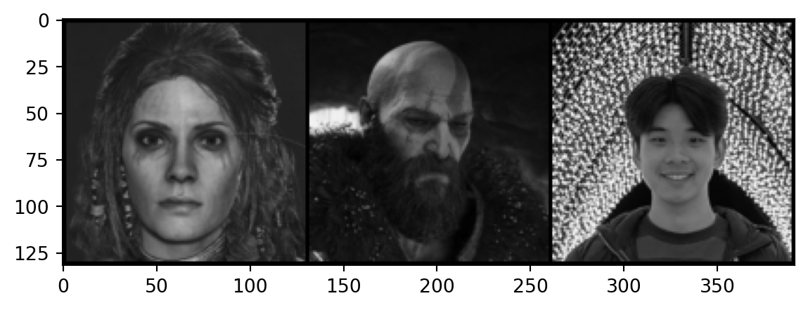
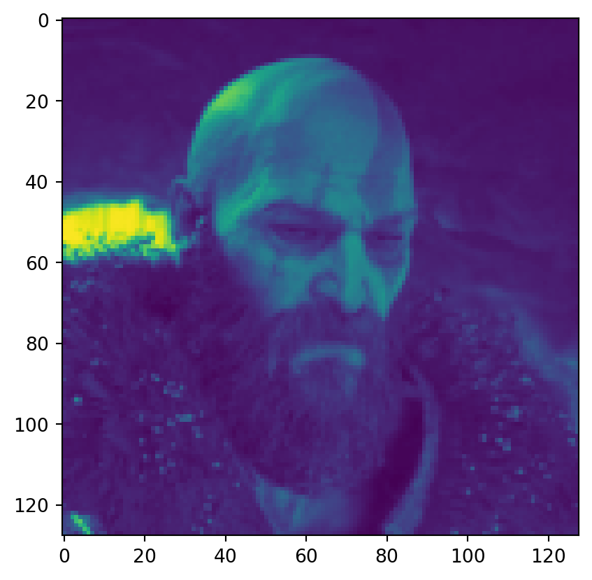

import torch
import torchvision
import torchvision.datasets as datasets
import torchvision.transforms as transforms
from torch.utils.data import DataLoader
# Some functions we'll need later
import modules.functions as funcGender Classification using PyTorch
Gender Classification
Neural Networks
Python
PyTorch
Classification of faces into genders using a convolutional neural network with residual layers.
Introduction
Neural networks are cool, they can take complex tasks that are usually pretty easy for humans to do and automate them, given you have sufficient training data and computing power. In this project, we will explore how to make our own neural network, and attempt to predict the gender of faces.
Neural Networks
To get a basic understanding of how neural networks, I would recommend watching 3Blue1Brown’s YouTube playlist on neural networks. We will be applying the theory discussed in the playlist in Python using the PyTorch library.
Sample Data
Before we define our model architecture, we’ll first load some data to enable us to visualise what the model is doing. We can do this using a couple of modules from torchvision.
We can then use our imported modules to create Dataset and DataLoader objects. The Dataset represents our image data, after applying a transformation which resizes our images to 128 by 128 pixels, converts to grayscale, and then converts the image to a tensor. The DataLoader object then creates an iterable object using our Dataset, which is useful for accessing our data in batches, this will help us later when we train our model.
# Set device for GPU acceleration, if available.
device = func.set_device()
loader = transforms.Compose([
transforms.Resize([128, 128]),
transforms.Grayscale(1),
transforms.ToTensor()
])
my_dataset = datasets.ImageFolder(
root='test_images/',
transform=loader
)
my_dataset_loader = DataLoader(
my_dataset,
batch_size=len(my_dataset),
generator=torch.Generator(device=device)
)Let’s set images and labels based on the first and only batch in our DataLoader.
data = iter(my_dataset_loader)
images, labels = next(data)We can then access our images, which are currently tensors. We can display the image tensors using a simple wrapper function that uses matplotlib.pyplot under the hood.
for i in range(len(images)):
func.imshow(images[i])

We now have Kratos and Freya as tensors! This will be useful later.
Model Architecture
To start, we’ll need to determine the architecture, or combination of layers, that our neural network will use. I tested model architectures starting from basic multilayer perceptrons to various forms of convolutional neural network (CNN), and found that fairly basic CNNs worked well on training and testing data which are split from the same main data source. However, I found that most CNN architectures failed to generalise well, and had poor accuracy when used on images outside of the training and testing splits.
The final model I settled on was a form of residual neural network, which adds residual layers to CNNs. We can define the model using torch.
import torch.nn as nn
import torch.nn.functional as F
# Define recurring sequence of convolution, batch normalisation, and rectified linear activation function layers.
def conv_block(in_channels, out_channels, pool=False):
layers = [
nn.Conv2d(
in_channels,
out_channels,
kernel_size=3,
padding=1
),
nn.BatchNorm2d(out_channels),
nn.ReLU()
]
if pool:
layers.append(
nn.MaxPool2d(4)
)
return nn.Sequential(*layers)
class resnetModel_128(nn.Module):
def __init__(self):
super().__init__()
# Define convolution and residual layers based on conv_block function.
self.conv_1 = conv_block(1, 64)
self.res_1 = nn.Sequential(
conv_block(64, 64),
conv_block(64, 64)
)
self.conv_2 = conv_block(64, 256, pool=True)
self.res_2 = nn.Sequential(
conv_block(256, 256),
conv_block(256, 256)
)
self.conv_3 = conv_block(256, 512, pool=True)
self.res_3 = nn.Sequential(
conv_block(512, 512),
conv_block(512, 512)
)
self.conv_4 = conv_block(512, 1024, pool=True)
self.res_4 = nn.Sequential(
conv_block(1024, 1024),
conv_block(1024, 1024)
)
# Define classifier function using fully connected, dropout, and rectified linear activation function.
self.classifier = nn.Sequential(
nn.Flatten(),
nn.Linear(2*2*1024, 2048),
nn.Dropout(0.5),
nn.ReLU(),
nn.Linear(2048, 1024),
nn.Dropout(0.5),
nn.ReLU(),
nn.Linear(1024, 2)
)
# Define forward function using functions initialised earlier, which outputs predictions.
def forward(self, x):
x = self.conv_1(x)
x = self.res_1(x) + x
x = self.conv_2(x)
x = self.res_2(x) + x
x = self.conv_3(x)
x = self.res_3(x) + x
x = self.conv_4(x)
x = self.res_4(x) + x
x = self.classifier(x)
x = F.softmax(x, dim=1)
return xNow let’s create an instance of resnetModel_128 and define our classes.
# Set seed for reproducibility.
torch.manual_seed(2687)
resnet = resnetModel_128()
classes = ('Female', 'Male')We now have resnet which is our model which we defined earlier, but with completely random parameters. Let’s make a prediction based on the untrained model
resnet.eval()
with torch.no_grad():
output = resnet.forward(images.to(device))
predicted = torch.max(output.data, 1)[1]
for i in range(len(predicted)):
print(f'Image: {my_dataset.imgs[i][0]}')
print(f'Prediction: {classes[predicted[i]]}')
print(f'Actual: {classes[labels[i]]}')
print(f'{classes[0]} weight: {output[i][0]}')
print(f'{classes[1]} weight: {output[i][1]}\n')Image: test_images/Female/freya.png
Prediction: Female
Actual: Female
Female weight: 0.5020168423652649
Male weight: 0.4979831576347351
Image: test_images/Male/kratos.png
Prediction: Female
Actual: Male
Female weight: 0.5018221139907837
Male weight: 0.4981779158115387
As expected, the model is doing nothing more than randomly guessing. Next, we’ll explore how we can train our model and make it smarter.
Training
In order to make our model better, we need to train it. Training a neural network requires a training dataset and goes through the following iteration until the model is sufficiently trained.
- Make predictions on training data using forward propagation.
- Calculate loss measure based on the difference between predicted labels and actual labels.
- Use back propagation to determine changes to parameters required to minimise loss measure.
- Make changes to parameters.
Let’s explore how we can do this using PyTorch.
Dataset
Conveniently for us, the CelebA is a publicly available labelled dataset of around 200k faces. As it’s a pretty well known dataset, there is a function in PyTorch that creates a automatically creates a dataset object for CelebA.
imsize = int(128/0.8)
batch_size = 10
fivecrop_transform = transforms.Compose([
transforms.Resize([imsize, imsize]),
transforms.Grayscale(1),
transforms.FiveCrop(int(imsize*0.8)),
transforms.Lambda(lambda crops: torch.stack([transforms.ToTensor()(crop) for crop in crops])),
transforms.Normalize(0, 1)
])
train_dataset = datasets.CelebA(
root = './',
split='all',
target_type='attr',
transform=fivecrop_transform,
download=True
)
train_loader = DataLoader(
train_dataset,
batch_size=batch_size,
shuffle=True,
generator=torch.Generator(device=device)
)Files already downloaded and verifiedtrain_data = iter(train_loader)
train_images, train_labels = next(train_data)
factor = func.attributes.index('Male')func.imshow(torchvision.utils.make_grid(train_images[0]))
print('Selected factor:')
print(classes[train_labels[:, factor][0]])
print('\nAll factors:')
for i, value in enumerate(train_labels[0]):
if value.item() == 1:
print(func.attributes[i])
Selected factor:
Male
All factors:
Arched_Eyebrows
Bags_Under_Eyes
Big_Lips
Big_Nose
Bushy_Eyebrows
Goatee
Male
Mustache
Wearing_Hat
Wearing_Necklace
Youngresnet.train()
criterion = nn.CrossEntropyLoss()
optimizer = torch.optim.SGD(
resnet.parameters(),
lr=0.01,
momentum=0.9,
weight_decay=0.001
)
scheduler = torch.optim.lr_scheduler.StepLR(
optimizer=optimizer,
step_size=1,
gamma=0.1
)parameters = func.n_parameters(resnet)
print(f'Total Parameters: {parameters[0]}')
print(f'Trainable Parameters: {parameters[1]}')Total Parameters: 41400194
Trainable Parameters: 41400194epochs = 2
train_losses = []
test_losses = []
for i in range(epochs):
train_cr = 0
test_cr = 0
for j, (X_train, y_train) in enumerate(train_loader):
X_train = X_train.to(device)
y_train = y_train[:, factor]
bs, ncrops, c, h, w = X_train.size()
y_pred_crops = resnet.forward(X_train.view(-1, c, h, w))
y_pred = y_pred_crops.view(bs, ncrops, -1).mean(1)
loss = criterion(y_pred, y_train)
predicted = torch.max(y_pred.data, 1)[1]
train_batch_cr = (predicted == y_train).sum()
train_cr += train_batch_cr
optimizer.zero_grad()
loss.backward()
optimizer.step()
if (j+1) % 10 == 0:
print(f'\nEpoch: {i+1} | Train Batch: {j+1}')
print(f'Train Loss: {loss.item()}')
print(f'Train Accuracy: {train_batch_cr/len(X_train)}')
train_losses.append(loss.item())
train_correct.append(train_cr.item())
scheduler.step()